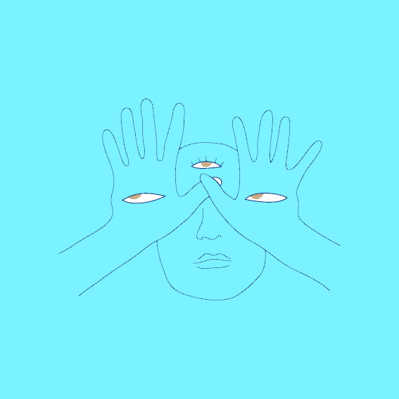

Heita, I'm Lindiwe.
I am student currently studying BA Digital Arts with an interest in game design and user experience design. As you browse the creative section, you will notice that most of my work is games-puzzle games to be specific but also includes other projects which are motion graphics and playing around with typography. My journey as a creative began as hobby but has become more than just that. It has become a form of expression. I like to explore different genres and mostly create 2D games. In terms of the inspiration for my projects, they are often inspired by other games, my own experiences and politics.